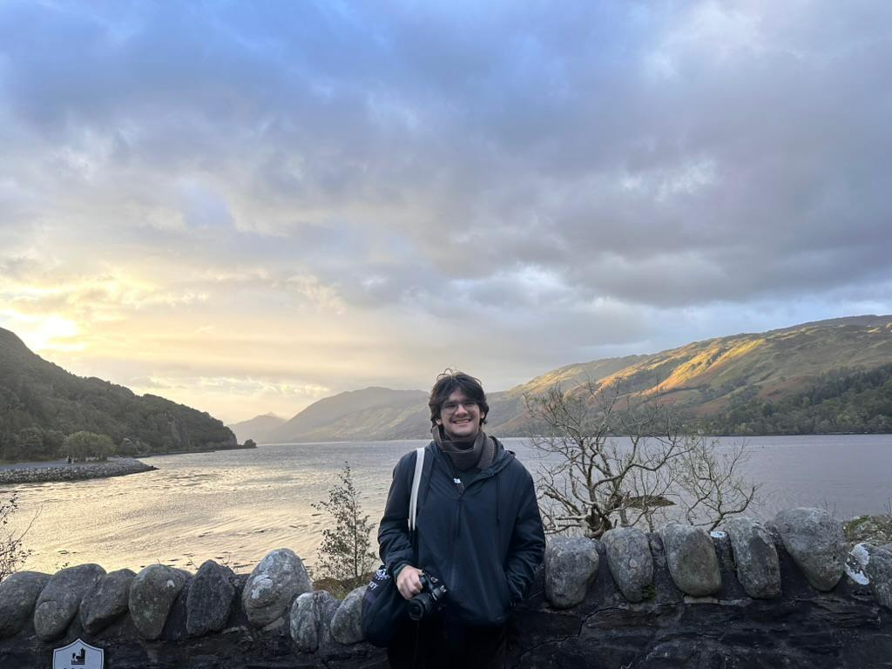

Electrical and Computer Engineering & Computer Science @ Trinity College & University of Edinburgh
Hi, I'm Liu Restrepo! I am an Electrical and Computer Engineering and Computer Science student at
Trinity College, with a passion for building systems
where hardware and software come together to do something real.
I've been fortunate to do research in two labs. In the Engineering Department, I develop nonlinear
signal processing algorithms in MATLAB and FORTRAN to analyse hippocampal EEG recordings. This work
led to a first-authored IEEE conference paper published and presented at CISP-BMEI 2025 in Qingdao, China.
In the Physics Department, I redesigned an FPGA-based photon coincidence detection system in Verilog,
overclocking it from 100 MHz to 300 MHz via PLL configuration and FSM restructuring, cutting time
resolution by 67% and boosting throughput by 175%. I also served as a Teaching Assistant for
Embedded Systems Design, which I loved: helping students debug Assembly and C firmware deepens
your own understanding in ways nothing else quite does.
Beyond the lab, I built a 4-node HPC cluster from commodity hardware and benchmarked it to
242 GFLOPS using MPI and HPL, and studied abroad at the University of Edinburgh. My interests sit
at the intersection of FPGA design, embedded systems, and high-performance computing, and I'm
always looking for the next challenging problem to sink my teeth into. Let's connect, or grab my
resume below!
